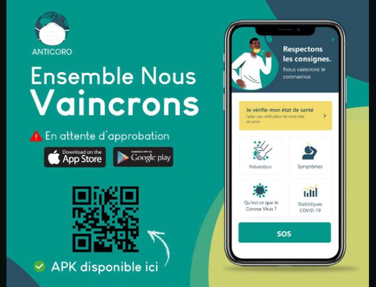

Lutte contre le COVID-19
La crise sanitaire sans précedente que le monde ait connu nommé COVID-19, a été une sorte d'élément déclancheur, une sorte de pincement ou une sorte de piqûre magique que l'on réçoit lorque nous sommes totalement endormi, et qu'il nous le faut, comme le dit l'adage suivant "à quelque part le malheur est bon",pour que nous puissions avoir un changement de paradigme,à remettre les choses en fonction de leurs priorités.Depuis l'avènement de ce virus, le mot d'ordre sur toutes le lèvres dans le monde entier est LA SOLIDARITE, je ne sais pas s'il faut dire "à cause" ou "grâce" au CIVID-19, tous les pays du monde, coopère ensemble dans un seul but, celui de rayer de la terre ce virus.
En Côte d'ivoire, cette solidarité est visible à travers les dons que font le gouvernement, les entreprises nationale et internationale, ainsi que des particuliers.Le domaine de la technologie n'est pas rester en marge de cette solidarité.En effet, un collectif de 10 start-up a ainsi mis sur pieds une solution digitale pour lutte contre le COVID-19, appuyé par les autorités gouvernementales. le collectif a developpé l'application nommée Anticoro.IL s'agit d'une application dont l'objectif est de soutenir les mesures prises par l'Etat ivoirien pour limiter l'impact de l'épidemie, tant du point de vue sanitaire qu'économique.
Tracking des patients
Dans les faits, l'application regroupe plusieurs volets.La partie << sécurité sanitaire >> est developpé en lien avec le dispositif Pass Santé Mousso,crée par Corine Ouattara. Ce bijou connecté à une plateforme en ligne permet aussi aux malades potentiels d'entrer les informations sur leurs symptômes,via un questionnaire à choix multiples. les réponses sont transmises directement à l'instituts Pateur, à l'institut national d'hygiène(INPH) et la prefecture de police afin de pouvoir agir vite pour aider la personne et limiter la propagation.
Une fonctionnalité permet aussi de géolocaliser les utilisateurs émettant des réquêtes et considérés comme étantà risques, afin d'éviter tout contact en attendant la confirmation des analyses. L'utilisateur a également accès à l'ensemble des recommandation et des mesures de prévention en langues locales, aux numéros d'urgences, et peut bénéficier d'une assistance vidéo ou encore d'une prise en charge psychologique, détaille Ange Bagui, de la start-up Adjemin.
Résilience économique et continuité pédagogique
D'autres fonctionnalités sont disponibles, comme la géolocalisation et de produits de prémière nécessité.La solution comporte aussi un volet éducatif, pour parer à la fermeture des établissements scolaires. Anticoro propose ainsi de E-learning et de télétravail
"Nous pensons que c'est une application dont l'impact peut être décisif dans la lutte contre le COVID-19 en Côte d'Ivoire, mais pas seulement. L'objectif est de dupliquer cette solution dans tous les pays africains", conclut Ange-Frédérik Balma. L'application web est disponible, sur web et mobile.
Le collectif Anticoro regroupe les start-up Ajemin, BHL SARL, ISNA,OASIS Corporate, Cookie Lab,Etudesk,Lifiled, Civichain,Byte SARL, Studio6.